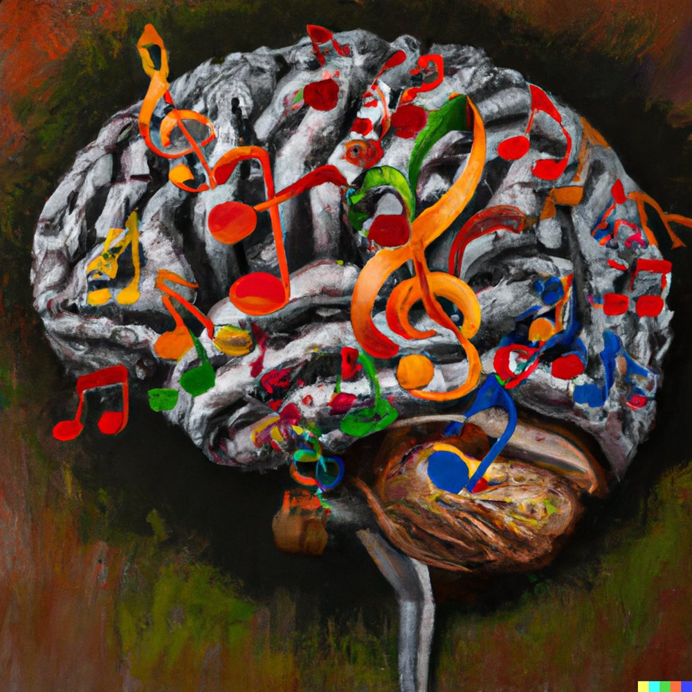

Research Projects
Neuroplasticity & Music Learning
Skill learning refers to the dedicated process of learning and practicing to enhance the accuracy,
speed, or overall performance of a specific perceptual, cognitive, or motor task. This form of
learning heavily depends on neuroplasticity; as one practices and repeats specific actions, the
individual's brain forms new connections and amplifies existing ones to optimize performance.
Diffusion MRI methods can reveal these learning-induced neuroplastic changes, from the microscopic
level - by exploring the microstructural characteristics of brain tissue; to the whole-brain network
level - by focusing on the connections between brain regions, as known as 'connectomics'.
Playing a musical instrument is a complex cognitive task involving higher cognitive functions,
multisensory integration, and motor control. Therefore, it serves as a multimodal model for studying
skill learning, which is suitable for both between-subjects comparisons and longitudinal studies.
Combining both approaches can help define the characteristics of a musician's brain, and provide
insights on how skill learning might affect the brain in general.

MRI Analysis of Music Learning
.jpeg)
In my MSc study, we found gray matter changes induced by a two-month trumpet learning course in a
real-life learning environment, as revealed by the diffusion MRI metric 'mean diffusivity'. While
these results show microscopic changes, broader approaches like 'connectomics' are necessary for a
comprehensive understanding of music learning effects.
In my PhD study, we intend to explore how music learning affects the brain and define which
characteristics are more dominant in the musician's brain. To do so, we plan to combine within- and
between-subjects approaches. We will analyze the data from my MSc study using connectomics and
explore the general population using the expanding 'Brain Bank'. This database includes subjects
with diverse levels of musical involvement: non-musicians, professionals, and everything in between.